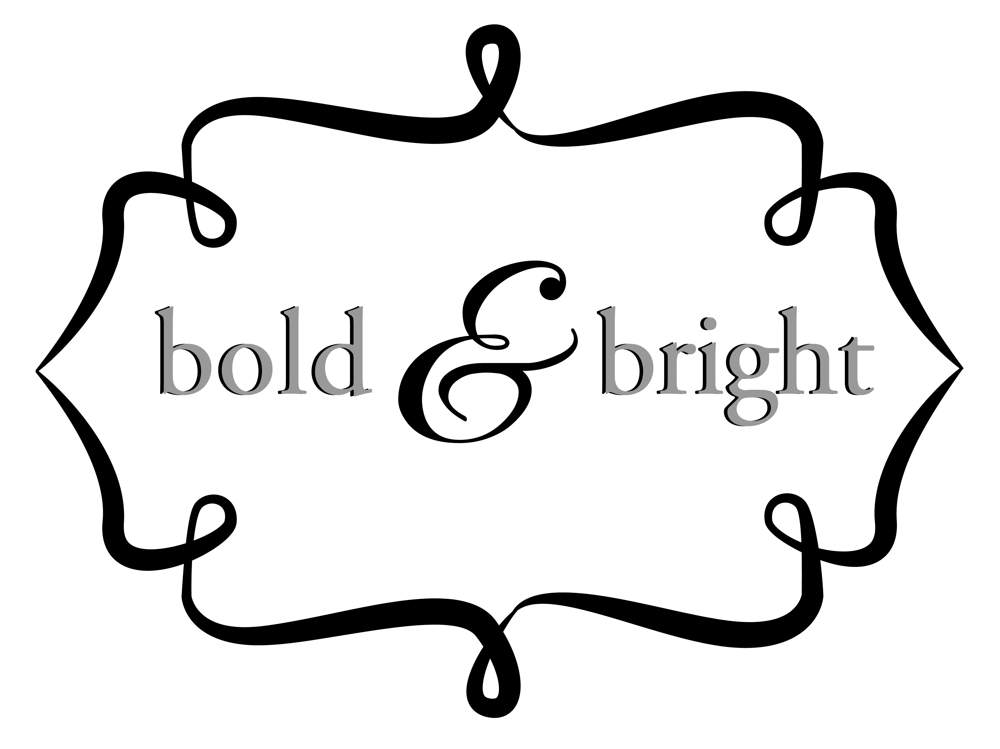
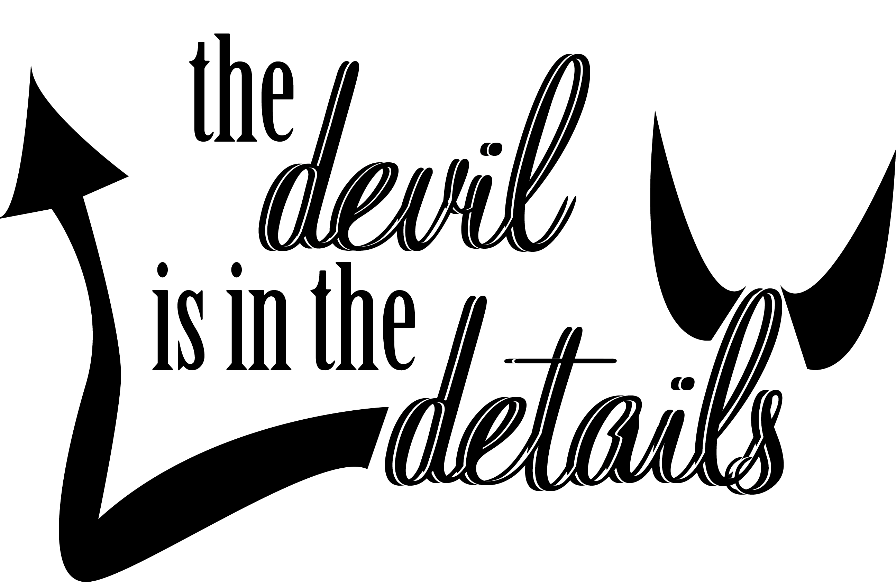

Inspired by "Looking for Alaska" by John Green, I designed this as a print for one of my favorite books.

A friend of mine once needed to me to remind her just how awesome she is. This piece is dedicated to her and to all women who ever lose sight of their own inner beauty and brilliance.

I created this design for the Design Desk at none other than one of my great loves, The Daily Californian. These were printed onto design staff t-shirts!

I came up with this design based off of a super cheesy pun: no one likes an energy hog. This particular design was made for an organization called PowerSave Campus at UC Berkeley.

Saving energy saves the world, truly. This design is inspired by the campaign put on by LA Metro to encourage people to take public transit. I translated the concept into something applicable to PowerSave Campus at UC Berkeley.

In the design world, we often nitpick what must seem to most people like the tiniest details. For designers like myself, it's the details that makes all the difference. This design is inspired by a lesson that I learn from my colleagues and clients everyday.
